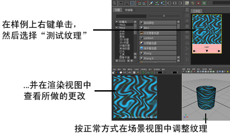

在 Windows 和 Mac OS X 中可用。
尽管“Hypershade”和“属性编辑器”(Attribute Editor)中的大多数样例会自动更新，以显示您构建着色网络时所做的更改，但现在，您能够以不同的分辨率在着色网络中的任何节点上创建完整的图像（或图像范围）。
可以使用示例图像查看着色网络纹理的多个部分的结果，或者验证未采用可视交互式表示（例如“乘除”(Multiply Divide)或“Gamma 校正”(Gamma Correct)工具）的纹理外观。
此外，也可以将多个文件节点的输出连接到分层纹理并设定所需的属性，以此在 Maya 内执行简单的合成。例如，可以在软件渲染场景上合成硬件渲染粒子。
限制和条件
- 工具节点的输出必须连接到某个下游，以便能从中查看示例。
- 纹理测试支持本地的 Maya 渲染节点。
- 测试纹理始终使用“渲染视图”(Render View)中的相同文件名（但可将其保存为不同名称）覆盖同一图像。
测试任何本地的 Maya 渲染节点上的纹理
- 在“Hypershade”中，执行下列操作之一：
- 在渲染节点上单击鼠标右键，然后选择“测试纹理”(Test Texture)。
- 选择纹理，然后选择编辑 > 测试纹理(Edit > Test Texture)。
- 如果要先更改分辨率，请选择纹理，然后选择编辑 > 测试纹理(Edit > Test Texture) >
 以显示选项。有关选项的描述，请参见编辑 > 测试纹理(Edit > Test Texture)。
以显示选项。有关选项的描述，请参见编辑 > 测试纹理(Edit > Test Texture)。
示例图像将在“渲染视图”(Render View)中渲染。
- 若要保存测试图像，请在“渲染视图”(Render View)中选择“文件 > 保存图像”(File > Save Image)。
在任何本地的 Maya 渲染节点上测试图像范围
- 执行下列操作之一：
- 选择纹理，然后选择编辑 > 渲染纹理范围(Edit > Render Texture Range)。
- 如果要更改分辨率、文件格式、帧范围或填充，请选择“纹理”，然后选择编辑 > 渲染纹理范围(Edit > Render Texture Range) > 以显示选项。有关选项的描述，请参见编辑 > 渲染纹理范围(Edit > Render Texture Range)。
渲染的图像范围将会自动加载，并在“FCheck”中播放。